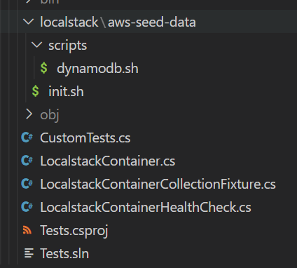

This blog post is also available as a video on my YouTube Channel.
Ever wondered how to get docker images to run nicely with XUnit tests? Then you’re in the right place. Let me show you how to setup Localstack with XUnit properly so that the only thing you need to worry about is having docker running. I’m using Localstack as the example but you can repeat a very similar process using the techniques shown here.
We will first setup the base infrastructure using two lesser known XUnit features before doing container management using TestContainers.
Our Test Case
To verify that we have everything working as we expect later on, I have the following test case which will require that a table be created with a specific name. If we do everything correctly, then this test should pass.
using Amazon.DynamoDBv2;
public class CustomTests
{
private string _localstackServiceUrl;
public CustomTests()
{
_localstackServiceUrl = "http://localhost:4566";
}
[Fact(Timeout = 30000)]
public async Task UsingLocalstack_ViaTestContainers()
{
// Arrange
var client = new AmazonDynamoDBClient(new AmazonDynamoDBConfig
{
ServiceURL = _localstackServiceUrl
});
// Act
var tables = await client.ListTablesAsync();
// Assert
Assert.True(tables.TableNames.Count == 1, $"Incorrect table count found. Expected 1, found: {tables.TableNames.Count}");
Assert.True(tables.TableNames[0] == "localstack-test", $"Table name mismatch. Expected 'localstack-test' found: {tables.TableNames[0]}");
}
}
Xunit Features
IAsyncLifetime
The first feature that of XUnit that we are going to take a look at is lifecycle management with IAsyncLifetime. We’re going to use this to create an instance of a Localstack container later on, but we need to setup a class initially to use it with our second XUnitFeature. When we add this interface to a class, we tell XUnit that it needs to start and dispose of this implementation in an asynchronous manner. This means that we need to implement two methods:
InitializeAsyncDisposeAsync
So lets create a class called LocalstackContainer and stub out the methods for us to complete later on:
using DotNet.Testcontainers.Builders;
using DotNet.Testcontainers.Configurations;
using DotNet.Testcontainers.Containers;
public class LocalstackContainer : IAsyncLifetime
{
public async Task InitializeAsync()
{
// Implement later
}
public async Task DisposeAsync()
{
// Implement later
}
private static string ToAbsolute(string path) => Path.GetFullPath(path);
}
Collection Fixtures
The next feature of XUnit we are going to rely on is Collection Fixtures. This allows us to have a singleton instance of an object for all tests unlike a ClassFixture which only allows us to have a singleton instance for test that inherit from the class fixture. The reason I am opt-ing for a collection fixture is so that we reduce the number instances of the localstack container because it can be quite heavy to run. If you think you can get away with a regular class fixture for your project you can definitely do that.
A collection fixture needs three parts:
- A class for the collection definition
- Adding an attribute to the test class pointing to the collection definition
- Injecting the class instance into the test class
Let’s take a look at the collection definition first. XUnit needs this for discovery purposes and requires us to do two things to our class:
- Inherit from
ICollectionFixture<T>- whereTis the type you want a singleton of, in our case we wantLocalstackcontainerwhich is the type we created earlier - Next we need to add a class level attribute
CollectionDefinitionwhich requires us to supply a name. For simplicity i’m going to use thenameofexpression to point back to ourT:
[CollectionDefinition(nameof(LocalstackContainer))]
public class LocalstackContainerInstanceCollectionFixture : ICollectionFixture<LocalstackContainer>
{
}
And that’s for the collection definition. If we move across to our test class now, where I have already pre-populated this with a random test that will ensure that everything is working later on.
To make use of the collection definition we need to add a class level attribute called Collection and pass in the same name that we gave to the CollectionDefinition attribute on the previous class. So here we will use the same nameof expression so that everything lines up nicely for us.
The last bit is to create a new constructor in our test class and add a parameter for our new type - which for us is going to be our localstack container.
[Collection(nameof(LocalstackContainer))]
public class CustomTests
{
private string _localstackServiceUrl;
public CustomTests(LocalstackContainer containerInstance)
{
_localstackServiceUrl = "http://localhost:4566";
}
// omitted for brevity
}
So at this point, we have a XUnit all configured to use a single instance of a container class that has an asynchronous lifetime managed for us. Let’s start spinning up a docker container…
Localstack Container Instance with TestContainers
Setup
If you haven’t heard of test containers before, you really need to go and check the project out. We are going to use TestContainers to spin up a new instance of localstack in our tests using the localstack container class that we created earlier. First up, lets create two properties, one for the localstack port that we’re going to use and the next for a generated URL using the new port number just to make our lives a bit easier later on.
We then need to create a private field to hold the container so we can implement the lifecycle events later on:
public class LocalstackContainer : IAsyncLifetime
{
private readonly TestcontainersContainer _localstackContainer;
public int LocalstackPort { get; }
public string LocalstackUri => $"http://localhost:{LocalstackPort}";
// omitted for brevity
}
In the constructor is where we are going to create the container definition. We create a new instance of TestcontainersBuilder with the type TestcontainersContainer from which we can configure this container. We need to call a few methods on this instance:
- WithImage - tells us which docker image to use
- WithCleanUp - tells TestContainers to clean up the image when we are done with it
- WithPortBinding - maps the ports for us. It’s important that we use the generated port number here mapping back to the localstack port of 4566.
- WithWaitStrategy - is used to tell us to wait for the port to become available. We’ll come back to this later.
public LocalstackContainer()
{
// Randomise the port to prevent port errors
LocalstackPort = Random.Shared.Next(4000, 5000);
_localstackContainer = new TestcontainersBuilder<TestcontainersContainer>()
.WithImage("localstack/localstack")
.WithCleanUp(true)
.WithPortBinding(LocalstackPort, 4566)
.Build();
}
Once that’s all done, we can then build the container definition. Next we need to go and configure the lifecycle events to start and stop our container:
public async Task InitializeAsync()
{
using var cts = new CancellationTokenSource(TimeSpan.FromMinutes(5));
await _localstackContainer.StartAsync(cts.Token);
}
public async Task DisposeAsync()
{
await _localstackContainer.DisposeAsync();
}
In the InitializeAsync method, we first need to create a new CancellationTokenSource so that we can abort any slow start ups if we need to. Then we call StartAsync on the container instance we setup earlier, remembering to pass in the cancellation token.
In the DisposeAsync method, we just need to call DisposeAsync on the TestContainers instance.
Before we can test this, we need to ensure that we update our tests to look at the new localstack URL:
[Collection(nameof(LocalstackContainer))]
public class CustomTests
{
private string _localstackServiceUrl;
public CustomTests(LocalstackContainer containerInstance)
{
_localstackServiceUrl = containerInstance.LocalstackUri;
}
// omitted for brevity
}
With this now done, we are in a suitable point where we can test the entire flow and watch our docker container spin up and teardown without any effort other than clicking run on the tests. The test will still fail at this point, but the lifecycle of our docker image is now managed.
Seeding data in Localstack
Now that we have a container up and running, we want the ability to to seed it with something useful, such as data for a dynamodb table. In order to do this, we need to change our container configuration a bit.
We are going to create two directories for our data:
- aws-seed-data: which will hold our initialization script and our next directory:
- scripts: this is where the bulk of your scripts will go
Under the aws-seed-data directory, create a new file called init.sh ensuring that the line endings are set to LF only. This file will help us control the ordering and invocation of sub-scripts later on.
Next under the scripts sub-directory, create a new script called dynamodb.sh. In here we are going to create a new dynamo db table using the awslocal command. This command is essentially a fully fledged AWS CLI but you never have to set the endpoint, which makes it super handy for scripting. In my example here, I’m just creating a dynamo table as I would normally, just switch aws for awslocal. Although I’m not doing it here, you can do a lot of fancy things like pre-seeding the dynamo table with a set amount of data for example.

Inside of our init script, we need to have the following:
#!/bin/sh
/scripts/dynamodb.sh
exit 0
Note that the forward slash at the start is very important as your just about to see.
Inside of our dynamodb.sh script, we need to have the following:
#!/bin/sh
awslocal dynamodb create-table \
--table-name localstack-test \
--key-schema AttributeName=PartitionKey,KeyType=HASH AttributeName=SortKey,KeyType=RANGE \
--attribute-definitions AttributeName=PartitionKey,AttributeType=S AttributeName=SortKey,AttributeType=S \
--provisioned-throughput ReadCapacityUnits=10,WriteCapacityUnits=5
If we now head back to our localstack container instance, we need to adjust the setup to mount our new seeding files. To do this we need the full path on the host that we want to mount and its corresponding destination in the docker image.
Localstack has a special folder in the image which is used to look for scripts at different parts of the initialization process - called /etc/localstack/init - this folder contains 4 directories:
boot.d: Scripts that run whenthe container is running but the LocalStack runtime has not been startedstart.d: Scripts that run when the Python process is running and the LocalStack runtime is startingready.d: Scripts that run when LocalStack is ready to serve requestsshutdown.d: Scripts that run when LocalStack is shutting down
We are going to mount the folder containing our init.sh script to the ready.d directory - so once localstack is ready it will execute that script. To do this, we call WithBindMount on the container image, passing in our folder followed by the folder in the docker image:
public LocalstackContainer()
{
LocalstackPort = Random.Shared.Next(4000, 5000);
_localstackContainer = new TestcontainersBuilder<TestcontainersContainer>()
.WithImage("localstack/localstack")
.WithCleanUp(true)
.WithPortBinding(LocalstackPort, 4566)
.WithBindMount(ToAbsolute("./localstack/aws-seed-data"), "/etc/localstack/init/ready.d", AccessMode.ReadOnly)
.WithBindMount(ToAbsolute("./localstack/aws-seed-data/scripts"), "/scripts", AccessMode.ReadOnly)
.Build();
}
We also need to map our scripts directory, so again we need to call WithBindMount and map the scripts directory to /scripts
Health check wait strategy
With our container now seeded, we have a slight ordering problem. Our tests may execute before our localstack instance has been fully provisioned. Luckily for us, both TestContainers and Localstack has us covered here.
Localstack has an endpoint that we can call to check the status of the initialization. This is located on the endpoint _localstack/init/ready.
TestContainers allows us to provide our own wait strategy too - so we can use that to create a new wait check by implementing the IWaitUntil class.
public class LocalstackContainerHealthCheck : IWaitUntil
{
private readonly string _endpoint;
public LocalstackContainerHealthCheck(string endpoint)
{
_endpoint = endpoint;
}
}
In the constructor of the wait check, we need to take a single parameter which is going to be the endpoint that localstack will be listening on. In the Until method we need to make a quick call to the API. The structure of the json returned has a completed object that has keys for each of the initialization phases. It also has a scripts section which contains a list of scripts for each stage and their corresponding states. We just need to look for the init.sh script in READY stage and ensure that it has the state SUCCESSFUL:
public async Task<bool> Until(ITestcontainersContainer testcontainers, ILogger logger)
{
// https://github.com/localstack/localstack/pull/6716
using var httpClient = new HttpClient { BaseAddress = new Uri(_endpoint) };
JsonNode? result;
try
{
result = await httpClient.GetFromJsonAsync<JsonNode>("/_localstack/init/ready");
}
catch
{
return false;
}
if (result is null)
return false;
var scripts = result["scripts"];
if (scripts is null)
return false;
foreach (var script in scripts.Deserialize<IEnumerable<Script>>() ?? Enumerable.Empty<Script>())
{
if (!"READY".Equals(script.Stage, StringComparison.OrdinalIgnoreCase))
continue;
if (!"init.sh".Equals(script.Name, StringComparison.OrdinalIgnoreCase))
continue;
return "SUCCESSFUL".Equals(script.State, StringComparison.OrdinalIgnoreCase);
}
return false;
}
public record Script(
[property: JsonPropertyName("stage")] string Stage,
[property: JsonPropertyName("state")] string State,
[property: JsonPropertyName("name")] string Name
);
The last bit for us to do is to configure the wait strategy for the container. In the container definition, we need to call a method called WithWaitStrategy. This takes one or more wait strategies which are built using the Wait class. The first thing we need to do here is tell Testcontainers that we are going to be waiting for a linux container by calling Wait.ForUnixContainer - then we can add two additional methods:
UntilPortIsAvailable- which will check the linux container to ensure that a port is being listened on. This will always need to be the container port, so in our case localstack’s port of 4566, not the randomised port we created earlier.AddCustomWaitStrategy- which we need to pass in a new instance of our new wait strategy
public LocalstackContainer()
{
LocalstackPort = Random.Shared.Next(4000, 5000);
_localstackContainer = new TestcontainersBuilder<TestcontainersContainer>()
.WithImage("localstack/localstack")
.WithCleanUp(true)
.WithPortBinding(LocalstackPort, 4566)
.WithWaitStrategy(Wait.ForUnixContainer()
.UntilPortIsAvailable(4566)
.AddCustomWaitStrategy(new LocalstackContainerHealthCheck(LocalstackUri))
)
.WithBindMount(ToAbsolute("./localstack/aws-seed-data"), "/etc/localstack/init/ready.d", AccessMode.ReadOnly)
.WithBindMount(ToAbsolute("./localstack/aws-seed-data/scripts"), "/scripts", AccessMode.ReadOnly)
.Build();
}
With all of these steps completed, you should now have tests that are nice and repeatable using XUnit and Localstack! If you’re wondering what else you’re missing out on, check out some of the latest features in .NET 7 you may have missed.
The full code for this is available to my Github Sponsors.